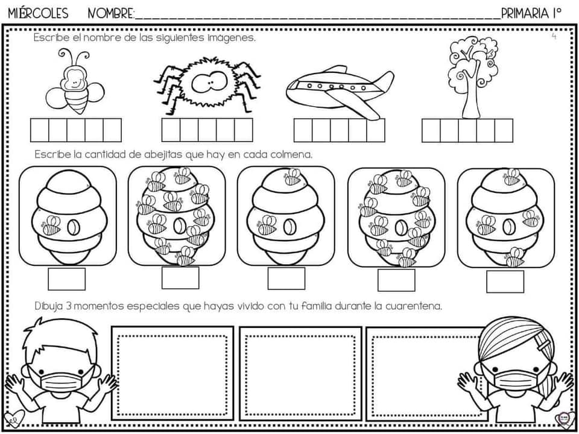

Nivel primario
Manualidades prácticas
La educación primaria es una etapa fundamental en la formación de los niños, y las actividades educativas son cruciales para desarrollar habilidades en áreas como matemáticas y lengua. Aquí te presento una lista de tres consejos que pueden ayudar a los educadores a planificar actividades efectivas en estas materias:
- Fomentar la Participación Activa:En las clases de matemáticas y lengua, es esencial que los estudiantes se involucren activamente en el proceso de aprendizaje. Para lograrlo, los educadores pueden diseñar actividades que estimulen la participación, como debates sobre temas de actualidad para la lengua o proyectos de resolución de problemas para las matemáticas. La participación activa permite a los estudiantes desarrollar habilidades de comunicación y pensamiento crítico mientras aplican conceptos teóricos en situaciones reales. Además, se puede promover el trabajo en equipo, lo que fomenta la colaboración y el intercambio de ideas entre los alumnos.
- Contextualizar el Aprendizaje:La contextualización es clave para ayudar a los estudiantes a comprender la relevancia de las materias. Para las matemáticas, esto podría significar la resolución de problemas del mundo real, como calcular proporciones en recetas de cocina o diseñar presupuestos ficticios. En lengua, se pueden realizar análisis literarios de textos relacionados con la cultura y la sociedad. La contextualización permite a los estudiantes ver cómo las habilidades que están adquiriendo se aplican en situaciones cotidianas, lo que aumenta su motivación y comprensión.
- Diversificar los Recursos y Enfoques:Cada estudiante tiene un estilo de aprendizaje único, por lo que es importante diversificar los recursos y enfoques utilizados en el aula. Para las matemáticas, esto podría implicar el uso de juegos interactivos en línea, manipulativos físicos o visualizaciones gráficas. En lengua, se pueden incorporar películas, debates y lecturas de diversos géneros. Adaptar las actividades y los materiales a diferentes estilos de aprendizaje garantiza que todos los estudiantes tengan la oportunidad de comprender y disfrutar de las materias. Además, se puede fomentar la autodirección, permitiendo a los estudiantes elegir enfoques que mejor se adapten a su forma de aprender.
En resumen, la educación primaria puede ser una experiencia enriquecedora cuando se planifican y ejecutan actividades educativas de manera efectiva. Estos consejos se centran en la participación activa, la contextualización y la diversificación de los recursos y enfoques, lo que puede ayudar a los estudiantes a desarrollar habilidades sólidas en matemáticas y lengua, al tiempo que fomenta un amor por el aprendizaje a lo largo de su vida.